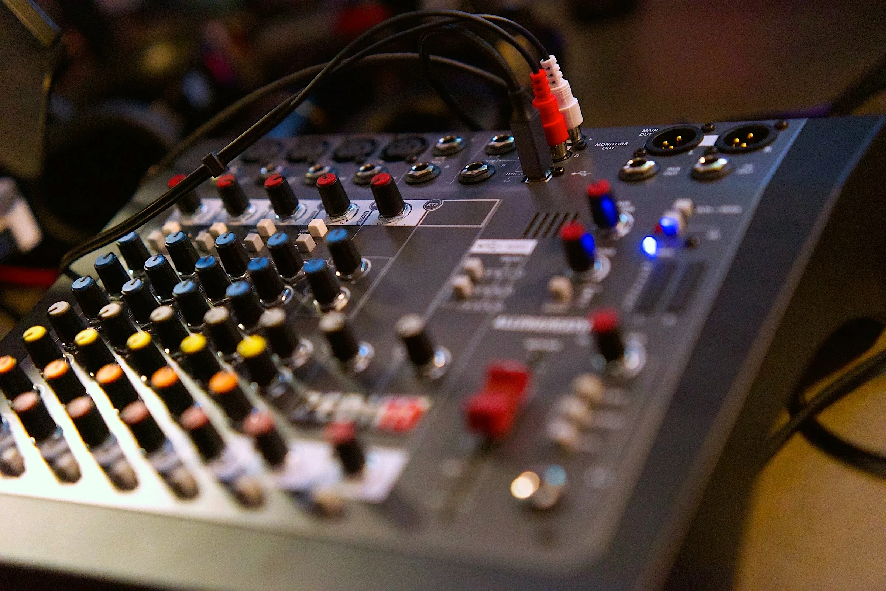
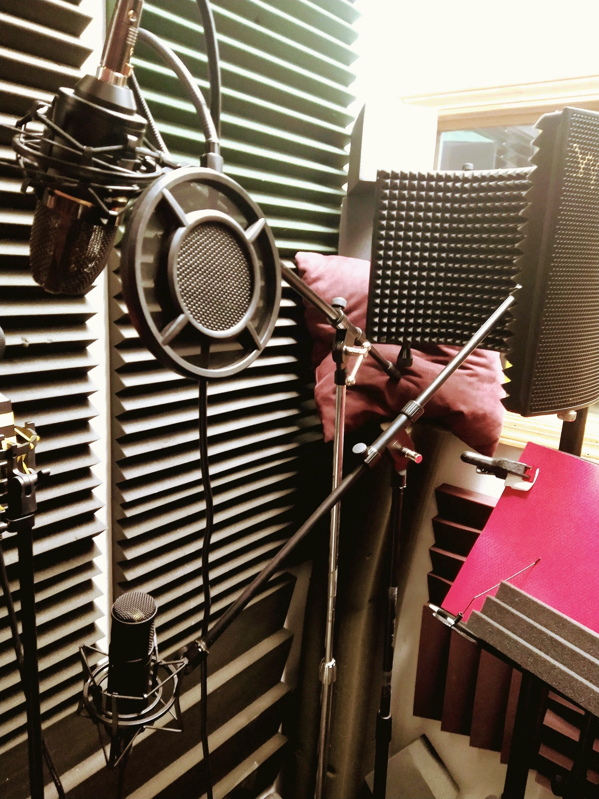
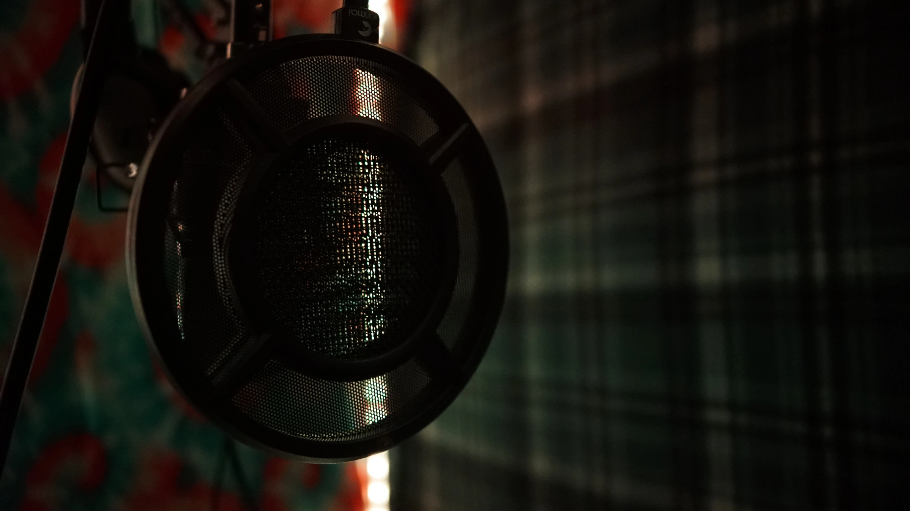

Best uses
Focused work. Direct signal.
Vocals, demos, writing sessions, rap sessions, acoustic instruments, and smaller focused projects.

Best uses
Vocals, demos, writing sessions, rap sessions, acoustic instruments, and smaller focused projects.
The room
A high-end vocal booth, strong acoustic treatment, an intimate working environment, and room for focused acoustic-instrument sessions.


Plan your session
Describe your project so the studio can recommend the right room.
Ask about Studio B